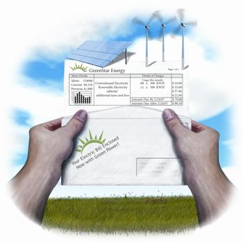

Want to do your part to curb global warming but can’t afford to line your roof with solar panels? The answer could be green power, electricity generated from renewable sources that, unlike oil, the planet has a-plenty.
Though federal energy policy isn’t yet promoting renewables aggressively, public demand for green power is growing. As a result, a new system of buying it, called renewable energy certificates (RECs), has evolved. RECs, which are also called “green tags,” allow consumers to vote with their dollars - choosing to spend more on their electric bills to know that their power comes, at least in part, from clean energy, such as solar or wind.
RECs are the “currency” of the green power industry, according to Lori Bird, co-author of “Green Power Marketing in the United States,” an annual report from the National Renewable Energy Laboratory (NREL). RECs allow consumers to pay a premium price for green power from anywhere in the country. You can buy as much renewable power as you want, from whatever source you prefer.
On average, green power costs about 2.4 cents more per kilowatt-hour (kWh), or roughly 34 percent more, than electricity from nonrenewable sources such as natural gas, coal or nuclear-powered plants, according to NREL. But that premium is coming down; it was 3.5 cents in 2000.
“There were 8.5 billion kWh of renewable energy sold in these voluntary markets in 2005,” Bird says. “That’s up 40 percent from 2004 … and it’s mostly from businesses, universities and federal and state agencies buying them.”
Among them are banking giant Wells Fargo and national grocer Whole Foods, which between them this year committed to buying a billion kWh of green power. They are second only to the U.S. Air Force, which signed up for the largest green power purchase in the country - 1.04 billion kWh - in 2005.
Still, such voluntary commitments make up only 20 percent of the total amount of green power sold the past few years, Bird says. Helping to buy the rest is a growing number of laws called renewable portfolio standards, or RPSs, which require utilities to deliver specified amounts of power from renewable sources.
Northeast power distributor National Grid has to comply with such laws in three of the four states it services, says senior company analyst John Warshaw. According to Warshaw, there’s not yet enough renewable energy production in the Northeast to meet these RPSs, but power-generating companies now have a clear incentive to invest in green power plants.
With state laws pushing power companies to buy more green energy, the Center for Resource Solutions has stepped in to independently verify energy sources. Its Green-e Renewable Energy Certification program audits about half of the renewable energy sold by the nation’s green power providers, according to Green-e analyst Lars Kvale. “If you want to be sure that the energy product you buy is a legitimate green energy product, look for ‘Green-e Certified,’” Kvale says.
About half the country can purchase green power from the electric utility serving their state or region. If your utility doesn’t offer green tags, consider buying into RECs or carbon offset programs, such as those offered by NativeEnergy and TerraPass. With these programs, you can calculate how much CO2 you are responsible for and purchase credits to offset that amount.
- Tim Wacker
To learn more about buying green power in your area, contact your local utility or consult the following DOE and EPA.
To learn more about buying green power or carbon offsets through independent organizations, consult the latest annual Green Power Marketing Status Report.
|
 NATE SKOW Buying renewable energy is more affordable than you might think. If you pay about $65 a month for your electricity, you could pay just $15 to $20 more to have your power come from clean energy. |
|
|